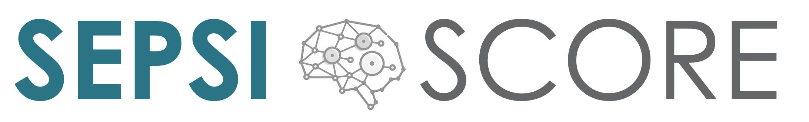

Analyser
Compatible avec les dossiers patients des principaux éditeurs grâce à la technologie FHIR , SEPSI-SCORE © analyse en temps réel les résultats de laboratoire, les signes vitaux et les antécédents.
Détecter
Certifiée dispositif médical en 2021, SEPSI-SCORE © identifie les risques de sepsis grâce à un algorithme prédictif utilisant les dernières techniques de machine learning
Alerter
En alertant en moyenne 48h avant les premiers symptômes, les professionnels de santé démarrent les traitements plus rapidement, permettant d'augmenter les chances de survie des patients.

Le sepsis
Le sepsis est une réponse inflammatoire généralisée associée à une infection. Si elle se produit après un acte invasif, on parle d’infection nosocomiale. Le sepsis peut être causé par des bactéries ou certains virus (SARS-Cov2, influenza H1N1…). Actuellement, le sepsis est responsable de 60 000 décès par an en France et représente 1 décès sur 5 dans le monde. Chaque heure de retard de diagnostic réduit les chances de survie du patient de 7%. .
Avec un taux de mortalité à 30 jours de 20 à 30%*, le sepsis est l’une des premières causes de décès en milieu hospitalier dans le monde.
Un algorithme précis et des alertes en temps réel permettent de réduire la durée de séjour et le taux de mortalité de manière significative.
* The association between four scoring systems and 30-day mortality among intensive care patients with sepsis: a cohort study - Nature, Mai 2021
L'équipe
Quentin FRANCOIS
CEO & Co-founder
Barthélémy ARRIBE
CTO & Co-founder
Pierre-Elliott THIBOUD
Data Scientist
Lionel MANZETTI
Software engineer
Axel JORON
Software engineer
Le comité stratégique
Aymeri CHOMEL
Président Veymont participations
Ziad WAKIM
Président HOPLA MEMORY
Xavier BADICHE
Président BLITZ
Sandra DUBOS
Directrice de participation KREAXI
« Ce qui a plus à KREAXI dans le projet PREVIA MEDICAL, c’est d’abord le parcours des dirigeants (…) mais aussi le choix du sepsis, une maladie très complexe. Il y a un réel besoin médical à la fois dans le suivi, la prédiction et le diagnostic. »
Florence THUEUX
Présidente M2CARE
« L’investissement de M2care dans Previa Medical est motivé par les qualités de ses fondateurs et la vision qu’ils portent sur des applications utiles de la médecine prédictive pour le patient et les professionnels de santé. »
News
Levée de fonds
Le Jeudi 16 Février 2023, PREVIA MEDICAL annonce une levée de 2,1 millions d’euros en amorçage.
Regarder la vidéoMEDICA
En Novembre 2022, PREVIA MEDICAL a présenté sa solution au salon international MEDICA à Düsseldorf en Allemagne
Interview
Le Mercredi 9 juin 2021, Michel Denisot a reçu Quentin François, le président de PREVIA MEDICAL dans LE GRAND ENTRETIEN.
Revoir l'interviewNos partenaires
La nouvelle technologie FHIR
FHIR est un standard
HL7 FHIR est le nouveau standard international permettant à des applications tierces d'accéder aux données du Dossier Patient Informatisé.
FHIR est une communauté
FHIR est une communauté internationale de developpeurs qui partagent des outils, du code et des connaissances.
FHIR est un écosystème
FHIR permet l'émergence de galerie d'application comme SMART on FHIR.
FHIR est en plein développement
Le projet Argonaut regroupe les principaux acteurs américains : Accenture, Apple, Cerner, Epic et des établissements de santé pour accélérer l'utilisation de FHIR.
FHIR est ouvert
Les spécifications FHIR sont open source et disponible sur le site HL7 FHIR.
FHIR est sécurisé
Les utilisateurs et clients qui accèdent aux données doivent être authenthifiés. Nous recommandons OPenID Connect et OAuth en utilisant le profil Smart on FHIR.
(Source : Simplifier.NET)
Contact
Si vous êtes interessés par nos services, vous pouvez nous contacter : par messagerie instantanée en cliquant ici ou nous envoyer un email à l'adresse : info@previa-medical.com